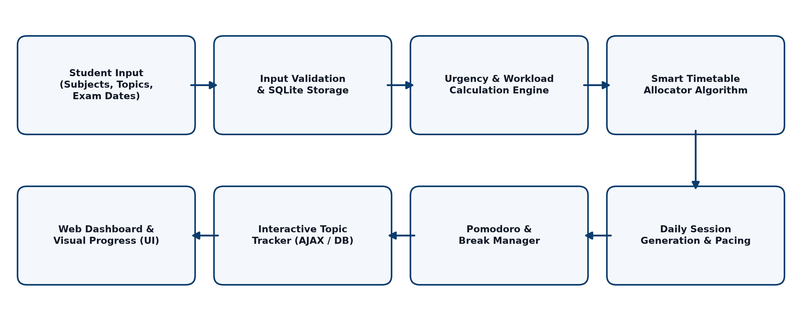

SYNOPSIS
ON
“AI-POWERED STUDENT STUDY PLANNER AND SMART TIMETABLE GENERATION SYSTEM”
Bhauti - Kanpur - 209305.
1. Introduction
In today's rigorous academic environment, engineering and undergraduate students are confronted with extensive curricula, multiple simultaneous subjects, practical assessments, and strict examination deadlines. Effective time management is essential for academic excellence; however, a large majority of students struggle with procrastination, cognitive overload, unbalanced preparation, and severe last-minute exam anxiety. Traditional manual planning methods—such as handwritten schedules, static paper timetables, or generic spreadsheet logs—are notoriously rigid and fail to adapt when real-world delays occur, resulting in abandoned study routines and poor academic performance.
Conventional productivity tools and calendar applications merely record static task reminders without assessing workload urgency, topic difficulty, or cognitive fatigue. When a student falls behind on a particular topic, manual rescheduling requires tedious effort, often leading to total breakdown of the revision plan. Intelligent algorithmic scheduling bridges this gap by continuously evaluating examination proximity, remaining syllabus volume, and available daily study hours, automatically redistributing topics so that high-priority academic commitments receive proportional focus without overwhelming the learner.
This project proposes an AI-Powered Student Study Planner and Smart Timetable Generation System that automatically calculates optimal, personalized daily study timetables. The application models academic subjects, syllabus topics, estimated learning durations, and target examination dates. Employing an adaptive urgency-calculation algorithm combined with Pomodoro-style interval optimization (structured 45-minute focus blocks paired with 15-minute restorative breaks), the system allocates daily sessions proportionally. Students can track completion in real time via an interactive web dashboard with progress analytics and live countdowns.
Special terms: Adaptive Scheduling – dynamic algorithmic reallocation of study slots based on ongoing progress; Urgency Score – a quantified priority index calculated from exam proximity and unfinished topic volume; Pomodoro Interval – a structured session technique balancing focused cognitive sprints with rest intervals; Workload Estimation – metric measuring syllabus scope in required learning hours; Relational Persistence – structured database storage tracking topics, subjects, and parameters.
2. Project Objective
The primary objective of this project is to design, develop, and deploy an intelligent, automated, and easy-to-use study planning and timetable generation platform that dynamically calculates personalized study routines, prioritizes subjects by urgency, and tracks curriculum progress in real time. The specific objectives are:
- To formulate and implement a dynamic priority algorithm that computes subject urgency scores based on days remaining until examinations and total uncompleted topic hours.
- To automate multi-day study timetable generation by intelligently distributing available daily study hours into structured focus sessions and restorative break intervals.
- To build an interactive and responsive web dashboard displaying overall completion percentages, subject-wise progress bars, and live examination countdowns.
- To provide seamless curriculum management allowing students to add, edit, and organize subjects with custom color tags, specific topics, and estimated learning hours.
- To implement real-time asynchronous topic completion tracking using AJAX and an SQLite relational database backend for frictionless user interaction.
- To empower learners with customizable study settings, including adjustable daily study hours, session lengths, preferred daily start hours, and break durations.
At the completion of the project, students and competitive exam aspirants will have an accessible, automated, and scientifically structured tool that eliminates the stress of manual planning, mitigates exam panic, and fosters disciplined, spaced learning habits for superior academic achievement.
3. Feasibility Study
A comprehensive feasibility study was conducted to evaluate whether the proposed study planner system can be successfully developed and deployed within the constraints of available resources, technical expertise, and semester deadlines. The project was assessed across five key dimensions:
Technical Feasibility: The system utilizes proven, open-source, and industry-standard technologies including Python, the Flask micro-framework, SQLite, and vanilla HTML5/CSS3/JavaScript. The priority scheduling algorithm requires minimal computational overhead and runs effortlessly on standard student laptops or lightweight local servers without requiring dedicated GPUs. The development team has the requisite programming proficiency in full-stack Python development, making the project technically feasible.
Operational Feasibility: The platform features a clean, responsive card-based user interface that requires zero specialized onboarding. Students simply input their subjects, topics, and exam dates, and the application instantly outputs an actionable daily schedule. Because it seamlessly complements the existing revision routines of university students, operational adoption is straightforward and highly feasible.
Economic Feasibility: All frameworks, libraries, runtime environments, and development tools (Flask, SQLite, VS Code, Git) are entirely open-source and free of licensing costs. No expensive external cloud APIs or proprietary third-party software are necessary, keeping overall development and hosting expenditures virtually zero. The project is therefore economically optimal for an academic project.
Schedule Feasibility: The project lifecycle is divided systematically into requirement analysis, relational schema design, algorithm implementation, frontend UI assembly, testing, and documentation. All phases have been mapped to realistic milestones and can be completed well within the designated semester timeframe.
Legal Feasibility: The application operates exclusively on student-entered academic details and stores information locally within an embedded SQLite database. No personal biometric or sensitive financial data is collected or distributed, ensuring strict compliance with IT ethics and data privacy norms.
4. Methodology / Planning of Work
The project follows a structured engineering methodology from conceptualization to deployment, organized into sequential development phases:
- Requirement analysis: investigate student revision workflows, time management bottlenecks, cognitive learning theories (spaced repetition and Pomodoro focus blocks), and feature requirements.
- Database modeling: architect a relational SQLite schema comprising subjects, hierarchical topics with completion timestamps, and global user study parameters.
- Algorithmic formulation: design the urgency calculation model that evaluates remaining hours against exam deadlines and allocates proportional daily session blocks.
- Backend routing: implement Flask application routes, database connection pooling, request validation, and RESTful asynchronous topic toggle handlers.
- Frontend interface: develop a modern, aesthetically polished UI with semantic HTML5, responsive CSS3 styling, subject color-coding, progress gauges, and multi-day timetable cards.
- Testing & validation: execute rigorous unit and boundary testing (exam on same day, zero remaining topics, overlapping subject deadlines) to verify scheduling accuracy.
- Deployment & reporting: package the application for seamless local execution, configure cloud hosting parameters, and compile complete technical documentation.
The complete architecture and flow of information between the modules is illustrated in the system architecture diagram below.

5. Tools / Technology Used
5.1 Minimum Hardware Requirements
Hardware required for the development and execution of the project.
- CPU: Intel Core i3 / i5 (8th Gen or higher) or AMD Ryzen 3 / 5, 2.0 GHz or above
- RAM: 4 GB (8 GB recommended for seamless multitasking and local server execution)
- GPU: Not required; standard integrated graphics are sufficient
- HDD/SSD: 128 GB SSD or 500 GB HDD with at least 5 GB free storage space
- Others (if any): Standard keyboard, mouse, and display monitor (1366x768 resolution or higher)
5.2 Minimum Software Requirements
Software required for the development and execution of the project.
- OS: Windows 10/11 (64-bit) or Ubuntu Linux 22.04 LTS
- Programming languages: Python 3.10 or above; HTML5, CSS3, and JavaScript (ES6+)
- Libraries and frameworks: Flask (v3.0+), Jinja2 template engine, Werkzeug, SQLite3
- Database: SQLite relational database for local persistence of study records
- Other tools: Visual Studio Code, Git and GitHub, Modern Web Browser (Google Chrome / Firefox / Edge)